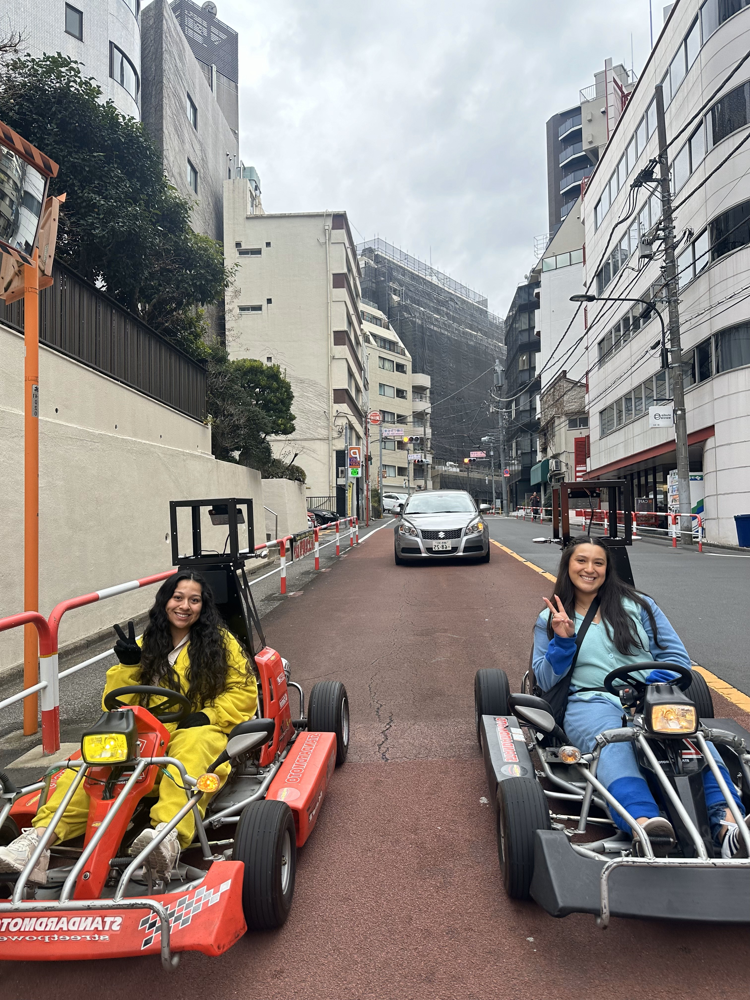
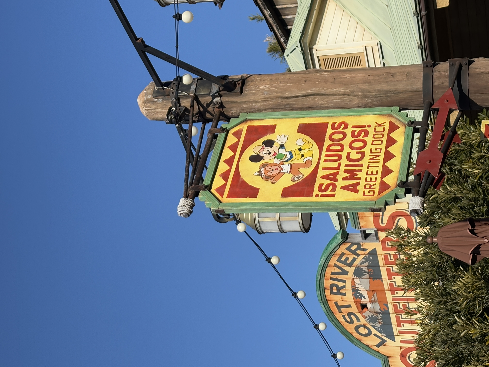
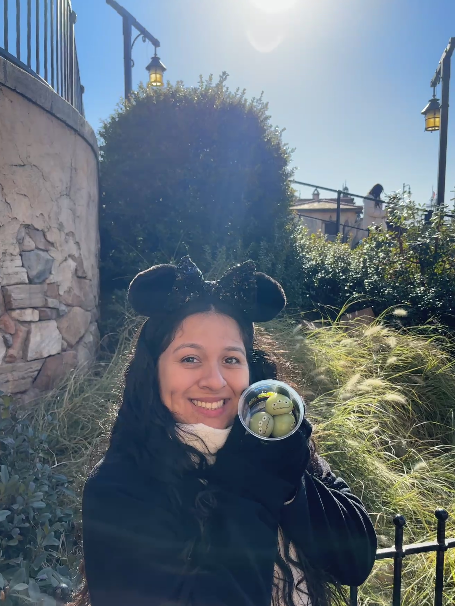
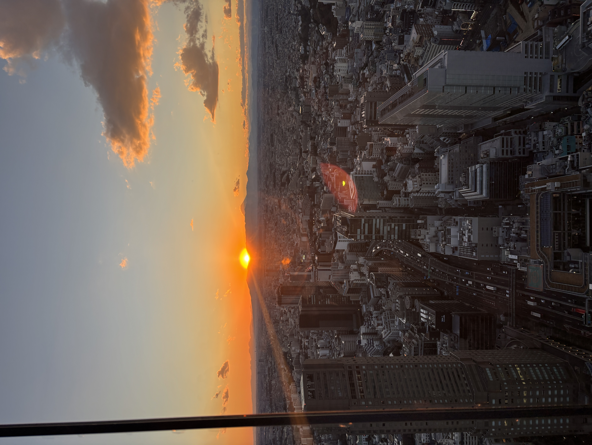
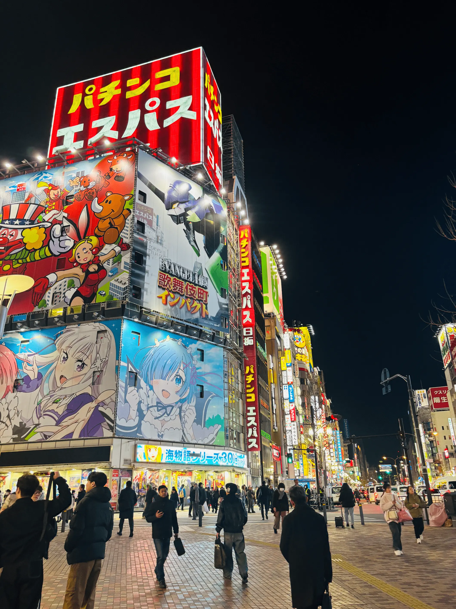

Past Trip to Tokyo

January 2025
January 2025
Save booking PDFs offline, add barcodes to your wallet, and preload a Suica/PASMO at the airport.
Our Tokyo adventure was packed with excitement, cultural immersion, and unforgettable memories. From real-life Mario Kart races to Disney magic, every moment was one to remember!
Tap a day to peek inside ✨
Some Golden Gai bars have a cover charge—carry a little cash.
Prime Shibuya Sky slots sell out—reserve early.
Arriving early at Senso-ji means softer light and fewer crowds.
Use the official app for wait times and mobile orders.
Go early to Tsukiji for the freshest samples.
Wear shorts or pants you can roll up—some exhibits involve water.
Grab an Enoden pass if you’ll hop along the coast.
Top up Suica/PASMO before you go—keep it for next time!








